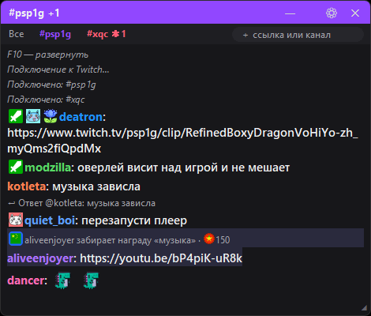
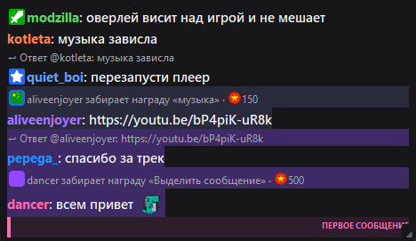
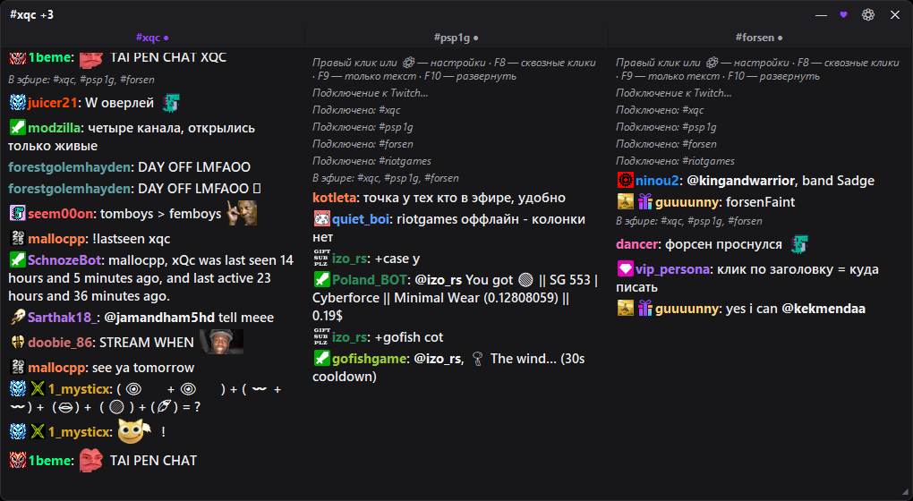
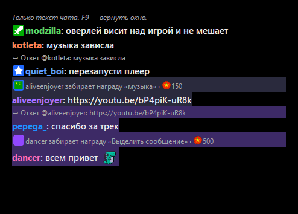
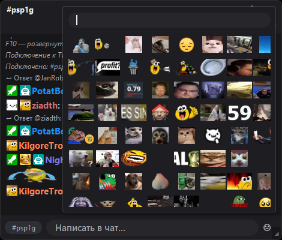

Windows · бесплатно · open source
Чат Twitch —
поверх игры,
а не вместо неё
Лёгкое окно с чатом — поверх любой игры и программы. Смайлы, несколько каналов, упоминания. Скачал и запустил.
Что умеет оверлей
Висит над любой игрой и программой. F11 — во весь экран, «—» — свернуть. Обновляется сам.
Остаётся один текст чата. Insert — текст + поле ввода. F8 — клики сквозь окно.
Разворачивается в колонки — только каналы, которые сейчас в эфире (●).
Анимированные двигаются. Пикер с поиском. В РФ работают без VPN.
Цвета ников, значки, ответы, награды за баллы, первое сообщение — как на сайте и в 7TV.
Вошли через Twitch — пишете прямо из оверлея. Мегафон шлёт анонс.
Бан, таймаут, варн, удалить — кнопки у сообщений там, где вы модер.
Частые каналы и наборы «вечер», «турниры» подключаются одним кликом.
Один переключатель — и в захвате окна чат прозрачный.
Что нового
- v1.17 — автообновление: новые версии качаются в фоне и ставятся при следующем запуске (или по клику ⟳)
- v1.16 — первое сообщение зрителя выделяется как в 7TV (кромка, подложка, метка)
- v1.15 — поле «＋ ссылка или канал» над чатом: вставил ссылку — чат открылся
- v1.14 — ответы «↩ Ответ @ник: …» и награды за баллы канала в ленте
- v1.13 — F10 открывает только каналы в эфире (●)
- v1.12 — Insert: прозрачный чат с полем ввода; F9 совсем чистый
- v1.11 — сворачивание, F11 во весь экран, 7TV быстрее
Полная история — в релизах на GitHub.
Как запустить
Скачайте TwitchChatOverlay.exe. Установка не нужна.
Запустите и введите канал. Ещё каналы — просто вставьте ссылку в поле над чатом.
Перетащите куда удобно. Правый клик — настройки.
⚠️ SmartScreen при первом запуске: «Подробнее» → «Выполнить в любом случае». Код открыт — можно проверить на GitHub. В игре включите режим «оконный без рамки», иначе поверх неё ничего не видно.
Скриншоты






Вкладки со счётчиком упоминаний, значки, смайлы и поле «＋ ссылка или канал» над чатом